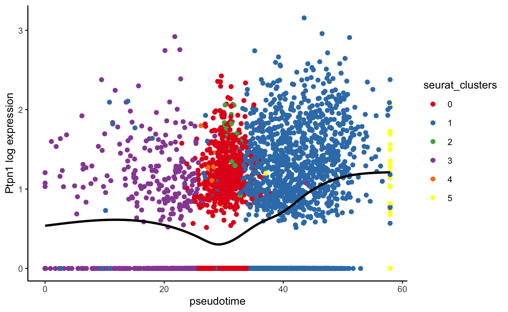

A short description of the post.
# Load packages
library(Seurat)
library(cowplot)
library(knitr)
library(tidyverse)
library(LaCroixColoR)
library(viridis)
library(RColorBrewer)
library(harmony)
library(slingshot)
library(ggridges)
library(tradeSeq)
library(pheatmap)
library(here)
# Set theme
ggplot2::theme_set(ggplot2::theme_classic(base_size = 10))
base_dir <- here()
We will use two datasets today. The first is associated with the publication “Single-cell RNA sequencing of murine islets shows high cellular complexity at all stages of autoimmune diabetes”. In this publication, the authors were trying to characterize the immune cell response during onset of diabetes in nonobese diabetic (NOD) mice. NOD mice are an autoimmune model for Type 1 diabetes where T cells lead the destruction of insulin producing Beta cells. To characterize the development of diabetes, they performed a timecourse experiment looking at immune cells in the pancreatic islet at 4 weeks, 8 weeks, and 15 weeks of age.
4 wk is about the first time that the first infiltrating T cells can be identified; 8 wk represents a time when leukocyte infiltration is prominent in most islets, still with no evidence of dysglycemia; and 15 wk is just before the time when clinical diabetes becomes evident.
To further complicate their design, samples were processed in two batches, the first batch contained one 4 week, one 8 week, and one 15 week sample. The second batch contained one 4 week and one 8 week sample.
We will start with just one of the 4 week samples from this dataset. The others we will include when we look at pseudotime.
The second dataset is from the paper “Single-cell transcriptome analysis defines heterogeneity of the murine pancreatic ductal tree”. They isolated all islet and ductal cells, so some of the cells overlap with the first dataset and some do not. We will use all cells for this analysis.
All of the timecourse samples were downloaded here. https://www.ncbi.nlm.nih.gov/geo/query/acc.cgi?acc=GSE141784. This group uploaded all of the filtered csv files from cellranger for each sample. These will be downloaded if you download the GSE141784_RAW.tar file. I have alread downloaded these files for you and ran basic filtering and aligning with the provided metadata using the code below. You do not need to run anything in this section, it is just provided so you can see all of the steps to process this data.
################################## DO NOT RUN ##################################
# This function will create a seurat object, filter to the cells used in the
# publication and add in the provided meta data.
make_seurat <- function(sample_list){
print(sample_list[["sample_full"]])
sample_counts <- Read10X(file.path(data_dir, "raw_data",
sample_list["sample_full"]))
sample_object <- CreateSeuratObject(counts = sample_counts,
project = sample_list["sample_full"],
min.cells = 5)
# Subset meta data to only the current sample
meta_data_short <- meta_data %>%
filter(Sample == sample_list["sample"] & Batch == sample_list["batch"])
# Change the barcode to match each sample pre-merging
meta_data_short$Barcode <- sub(pattern = "-[0-9]", replacement = "-1",
meta_data_short$Barcode)
# Subset to only cells in meta data
sample_object <- subset(sample_object, cells = meta_data_short$Barcode)
# Check if identical
print(identical(meta_data_short$Barcode, colnames(sample_object)))
rownames(meta_data_short) <- meta_data_short$Barcode
sample_object <- AddMetaData(sample_object, metadata = meta_data_short)
# Add mitochondrial percent
sample_object[["percent.mt"]] <- PercentageFeatureSet(sample_object,
pattern = "^mt-")
sample_object <- CellCycleScoring(sample_object,
s.features = s.genes,
g2m.features = g2m.genes,
set.ident = FALSE)
# Normalize
sample_object <- NormalizeData(sample_object) %>%
FindVariableFeatures() %>%
ScaleData()
return(sample_object)
}
# Set directories
base_dir <- here()
data_dir <- file.path(base_dir, "data")
# Read in meta data
meta_data <- read.table(file.path(data_dir,
"GSE141784_Annotation_meta_data.txt"),
header = T)
# Set sample information
sample_list <- list(
c(sample_full = "NOD_15w_2734", sample = "NOD_15w", batch = 2734),
c(sample_full = "NOD_4w_2734", sample = "NOD_4w", batch = 2734),
c(sample_full = "NOD_4w_2849", sample = "NOD_4w", batch = 2849),
c(sample_full = "NOD_8w_2734", sample = "NOD_8w", batch = 2734),
c(sample_full = "NOD_8w_2849", sample = "NOD_8w", batch = 2849))
# Cell cycle genes (taken from seurat cc.genes and translated to mouse genes)
s.genes <- c("Exo1", "Mcm4", "Msh2", "Gmnn", "Chaf1b", "Mcm2", "Rrm2",
"Rad51ap1", "Gins2", "Hells", "Cdc6", "Ubr7", "Cdc45", "Fen1",
"Rpa2", "Slbp", "Uhrf1", "Ung", "Mcm5", "Dtl", "Casp8ap2",
"Wdr76", "Nasp", "Prim1", "Cdca7", "Clspn", "Pola1", "Mcm6",
"Blm", "Dscc1", "Usp1", "Tipin", "Rfc2", "Brip1", "Rrm1",
"Rad51", "Tyms", "Ccne2", "E2f8", "Pcna")
g2m.genes <- c("Ctcf", "Smc4", "Dlgap5", "Cdc25c", "Gtse1", "Kif20b", "Ncapd2",
"Ttk", "G2e3", "Lbr", "Cks1brt", "Cdca2", "Tacc3", "Anp32e",
"Cdca3", "Ckap2", "Cks2", "Hmgb2", "Top2a", "Tpx2", "Kif23",
"Rangap1", "Psrc1", "Cks1b", "Aurkb", "Hmmr", "Cenpf", "Birc5",
"Cdca8", "Ckap5", "Kif2c", "Kif11", "Hjurp", "Cenpe", "Nuf2",
"Ndc80", "Nek2", "Cdc20", "Ect2", "Anln", "Tubb4b", "Bub1",
"Aurka", "Ckap2l", "Ccnb2", "Nusap1", "Mki67", "Ube2c", "Cenpa")
# Make a list of seurat objects
seurat_list <- lapply(sample_list, make_seurat)
The files associated with the second can be downloaded here https://www.ncbi.nlm.nih.gov/geo/query/acc.cgi?acc=GSM4826923. This group only uploaded their output files from 10x genomics, so I remade the object, performed the initial steps of analysis and identified celltypes by looking for clusters that shared the most marker genes with each of their identified cell types.
I have already created processed Seurat objects that we will use today. This processing included finding mitochondrial percents, creating a cell cycle score, normalizing the data, finding variable genes, and scaling the data. We will skip this today, but all steps are shown in the code segment above. We can use the code below to create a “data” directory (folder) and download the files into it.
## Make a data directory only if it doesn't already exist
ifelse(!dir.exists(file.path(base_dir, "data")),
dir.create(file.path(base_dir, "data")), FALSE)
[1] FALSE## DOWNLOAD FILES if they haven't already been downloaded
ifelse(!file.exists(file.path(base_dir, "data", "NOD_4w_2734.rda")),
download.file(
url = "http://amc-sandbox.ucdenver.edu/User60/single_cell_workshop/NOD_4w_2734.rda",
destfile = file.path(base_dir, "data", "NOD_4w_2734.rda")),
FALSE)
[1] FALSEifelse(!file.exists(file.path(base_dir, "data", "hendley_seurat.rda")),
download.file(
url = "http://amc-sandbox.ucdenver.edu/User60/single_cell_workshop/hendley_seurat.rda",
destfile = file.path(base_dir, "data", "hendley_seurat.rda")),
FALSE)
[1] FALSEBefore we integrate samples, we first need to decide if there is a batch effect that we need to worry about. To do this, I first merge all of the samples together and use a few quick plots.
We can take this list and pass it to the merge function from Seurat. This function takes one seurat object as x and a list of Seurat objects for y. This function automatically merges the data slots, so we won’t need to repeat normalization. We can see other options by typing ?merge
# merge objects
seurat_merge <- merge(x = seurat_object,
y = seurat_two)
Let’s now look at this new object
print(seurat_merge)
An object of class Seurat
18788 features across 16846 samples within 1 assay
Active assay: RNA (18788 features, 0 variable features)You can see that we no longer have variable features, so we will need to find new variable features and rescale the data
# Remeber if you want to regress out any variables, you can do that using ScaleData
seurat_merge <- FindVariableFeatures(seurat_merge) %>%
ScaleData()
We also will need to repeat PCA and UMAP
# It's best to set a seed before running UMAP
set.seed(0)
seurat_merge <- RunPCA(seurat_merge) %>%
FindNeighbors(dims = 1:30) %>%
FindClusters(resolution = 0.8) %>%
RunUMAP(dims = 1:30, assay = "RNA")
Modularity Optimizer version 1.3.0 by Ludo Waltman and Nees Jan van Eck
Number of nodes: 16846
Number of edges: 662672
Running Louvain algorithm...
Maximum modularity in 10 random starts: 0.9215
Number of communities: 31
Elapsed time: 2 secondsNow we should check if any sort of batch correction is necessary. Let’s check by dataset. The dataset is stored as orig.ident in the object
orig.ident nCount_RNA nFeature_RNA
AAACGGGAGGAGTTTA-1_1 NOD_4w_2734 755 424
AACCGCGAGGAGTAGA-1_1 NOD_4w_2734 1044 559
ACATACGGTCGCATCG-1_1 NOD_4w_2734 686 465
AGGCCACTCAAGGCTT-1_1 NOD_4w_2734 2019 994
AGTGGGAAGGGAACGG-1_1 NOD_4w_2734 1168 607
ATCATCTCAATCGGTT-1_1 NOD_4w_2734 779 393
Barcode Cells Sample Batch Library
AAACGGGAGGAGTTTA-1_1 AAACGGGAGGAGTTTA-1 Bcell NOD_4w 2734 6
AACCGCGAGGAGTAGA-1_1 AACCGCGAGGAGTAGA-1 Bcell NOD_4w 2734 6
ACATACGGTCGCATCG-1_1 ACATACGGTCGCATCG-1 Bcell NOD_4w 2734 6
AGGCCACTCAAGGCTT-1_1 AGGCCACTCAAGGCTT-1 Bcell NOD_4w 2734 6
AGTGGGAAGGGAACGG-1_1 AGTGGGAAGGGAACGG-1 Bcell NOD_4w 2734 6
ATCATCTCAATCGGTT-1_1 ATCATCTCAATCGGTT-1 Bcell NOD_4w 2734 6
percent.mt S.Score G2M.Score Phase
AAACGGGAGGAGTTTA-1_1 2.913907 -0.009980040 -0.015109121 G1
AACCGCGAGGAGTAGA-1_1 3.065134 0.034031936 0.030183982 S
ACATACGGTCGCATCG-1_1 3.498542 0.065019960 0.148715782 G2M
AGGCCACTCAAGGCTT-1_1 3.268945 0.129091816 0.235910145 G2M
AGTGGGAAGGGAACGG-1_1 3.595890 0.003709248 -0.001416123 S
ATCATCTCAATCGGTT-1_1 1.412067 0.015019960 0.013133401 S
RNA_snn_res.0.8 seurat_clusters RNA_cluster
AAACGGGAGGAGTTTA-1_1 2 2 <NA>
AACCGCGAGGAGTAGA-1_1 9 9 <NA>
ACATACGGTCGCATCG-1_1 12 12 <NA>
AGGCCACTCAAGGCTT-1_1 12 12 <NA>
AGTGGGAAGGGAACGG-1_1 9 9 <NA>
ATCATCTCAATCGGTT-1_1 2 2 <NA>
pANN_0.25_0.05_478
AAACGGGAGGAGTTTA-1_1 NA
AACCGCGAGGAGTAGA-1_1 NA
ACATACGGTCGCATCG-1_1 NA
AGGCCACTCAAGGCTT-1_1 NA
AGTGGGAAGGGAACGG-1_1 NA
ATCATCTCAATCGGTT-1_1 NA
DF.classifications_0.25_0.05_478 Doublet_finder
AAACGGGAGGAGTTTA-1_1 <NA> <NA>
AACCGCGAGGAGTAGA-1_1 <NA> <NA>
ACATACGGTCGCATCG-1_1 <NA> <NA>
AGGCCACTCAAGGCTT-1_1 <NA> <NA>
AGTGGGAAGGGAACGG-1_1 <NA> <NA>
ATCATCTCAATCGGTT-1_1 <NA> <NA>
RNA_snn_res.0.4
AAACGGGAGGAGTTTA-1_1 <NA>
AACCGCGAGGAGTAGA-1_1 <NA>
ACATACGGTCGCATCG-1_1 <NA>
AGGCCACTCAAGGCTT-1_1 <NA>
AGTGGGAAGGGAACGG-1_1 <NA>
ATCATCTCAATCGGTT-1_1 <NA>We can now plot to see if these look different, which they do. In samples with bad batch effects, like these two samples, no cells will overlap. You can see that the samples almost are a mirror image of each other.
batch_colors <- LaCroixColoR::lacroix_palette("Pamplemousse", 2)
names(batch_colors) <- unique(seurat_merge$orig.ident)
DimPlot(seurat_merge, group.by = "orig.ident", cols = batch_colors)
These two datasets are interesting because they contain some, but not all, of the same celltypes
Bcell CD4
25 283
CD8 cDC
148 200
Contamination_Endocrine Contamination_Neutr
31 1
Contamination_Red_blood_cell EC
8 5206
gdT ILC2
10 7
Mac Mesenchymal
1711 1193
NK NKT
26 58
pDC Undefined_Stroma
84 28
Bcell CD4
624 681
CD8 cDC
566 305
Ductal_cells EC
2073 611
Fibroblasts Germinal_center_B_cells
73 232
Mac pDC
2533 21
Plasma_cell unknown
86 22 DimPlot(seurat_merge, group.by = "Cells", split.by = "orig.ident",
reduction = "umap")
I personally first use harmony as my batch correction tool. There are some really nice benchmarking papers for batch correction that can give you more information on the best tool to use.
Harmony works by weakly clustering cells and then calculating - and iteratively refining - a dataset correction factor for each cluster. Note that Harmony only computes a new corrected dimensionality reduction - it does not calculate corrected expression values (the raw.data, data and scale.data slots are unmodified). This works well for most datasets, but can be be insufficient for downstream differential expression analyses in extremely divergent samples.
Actually running harmony with a seurat object is quite simple, you just use a function called RunHarmony. We can see the inputs to this function by using ?RunHarmony
We will use plot_convergence = TRUE so that we can ensure each iteration improves
# Here we use "orig.ident", but we can use anything from the meta data
seurat_merge <- RunHarmony(object = seurat_merge,
group.by.vars = "orig.ident",
plot_convergence = TRUE)
The objective function should be continuously improving. In this case, it’s not perfect, but probably good enough. I recomend changing the theta parameter if the function gets severely worse in later itearation.
The returned object now has a new dimensional reduction called harmony.
print(seurat_merge)
An object of class Seurat
18788 features across 16846 samples within 1 assay
Active assay: RNA (18788 features, 2000 variable features)
3 dimensional reductions calculated: pca, umap, harmonyWe can use this to rerun our UMAP. I like to use a reduction key for my umap so I remember that it was made with harmony
set.seed(0)
seurat_merge <- FindNeighbors(seurat_merge,
dims = 1:30, reduction = "harmony") %>%
FindClusters(resolution = 0.8) %>%
RunUMAP(dims = 1:30, assay = "RNA", reduction = "harmony",
reduction.key = "harmony.UMAP_", reduction.name = "harmony.umap")
Modularity Optimizer version 1.3.0 by Ludo Waltman and Nees Jan van Eck
Number of nodes: 16846
Number of edges: 662316
Running Louvain algorithm...
Maximum modularity in 10 random starts: 0.9062
Number of communities: 31
Elapsed time: 2 secondsWe can check with some plots. Now we need to specify the reduction. Below we can see that in many places cells overlap and in some places they don’t. If harmony worked, the common cell types should overlap while the unique celltypes should not
print(seurat_merge)
An object of class Seurat
18788 features across 16846 samples within 1 assay
Active assay: RNA (18788 features, 2000 variable features)
4 dimensional reductions calculated: pca, umap, harmony, harmony.umapDimPlot(seurat_merge, group.by = "orig.ident", cols = batch_colors,
reduction = "harmony.umap")
Now we can check celltypes
DimPlot(seurat_merge, group.by = "Cells",
reduction = "harmony.umap")
Overall, this looks great. The ductal cells should only be in one dataset which is true, same with the Mesenchymal cells. The other cell types mix nicely.
DimPlot(seurat_merge, group.by = "Cells", split.by = "orig.ident",
reduction = "harmony.umap")
Just to visualize more clearly, we can visualize specific celltypes in each dataset.
Idents(seurat_merge) <- "Cells"
plots <- lapply(c("Bcell", "CD4", "CD8", "Mac"), function(x){
return(DimPlot(seurat_merge, group.by = "Cells", split.by = "orig.ident",
cells.highlight = CellsByIdentities(object = seurat_merge,
idents = x),
reduction = "harmony.umap"))
})
plot_grid(plotlist = plots,
nrow = 2, ncol = 2)
We can now identify markers based on this integrated dataset. We can identify markers of celltypes that are conserved in both datasets using the funciton FindConservedMarkers. First, we can set the identity of the cells to the celltypes. The below function takes several minutes to run, so we will skip it here. It also requires a couple of additional packages
################################## DO NOT RUN ##################################
BiocManager::install('multtest')
install.packages('metap')
Idents(seurat_merge) <- "Cells"
macrophage_markers <- FindConservedMarkers(seurat_merge,
ident.1 = "Mac",
grouping.var = "orig.ident")
print(macrophage_markers[1:20,])
We can also identify any differences between the macrophage populations in the two samples. This would be more interesting if one was a treatment and one was a control.
First, we need to create a new column in the metadata that contains both sample information and cell type information
seurat_merge$sample_celltype <- paste0(seurat_merge$orig.ident, "_",
seurat_merge$Cells)
Now we can find markers between two populations
Idents(seurat_merge) <- "sample_celltype"
mac_sample_markers <- FindMarkers(seurat_merge, ident.1 = "NOD_4w_2734_Mac",
ident.2 = "GSM4826923_C57BL6J_Mac")
print(mac_sample_markers[1:20,])
p_val avg_log2FC pct.1 pct.2 p_val_adj
Pid1 0 -1.937315 0.137 0.810 0
Cfh 0 -2.892699 0.122 0.904 0
Rgs1 0 3.430878 0.871 0.158 0
Gas5 0 2.893606 0.805 0.000 0
Mrc1 0 -4.001585 0.037 0.968 0
Rpl35 0 1.324887 0.992 0.990 0
Zeb2 0 -1.669259 0.428 0.930 0
Gatm 0 2.738485 0.950 0.492 0
Pltp 0 -1.937587 0.188 0.785 0
Ctsz 0 1.720703 0.944 0.764 0
Rpl22l1 0 1.551200 0.937 0.794 0
Mbnl1 0 -2.005029 0.276 0.908 0
Fcrls 0 -2.771061 0.016 0.855 0
Txnip 0 -2.085770 0.205 0.873 0
Rpsa-ps10 0 1.522140 0.469 0.000 0
Wwp1 0 -2.726688 0.032 0.840 0
Cd72 0 2.332359 0.756 0.196 0
Prdx1 0 1.868586 0.969 0.884 0
Ccdc23 0 1.602846 0.492 0.000 0
Cela3b 0 -2.566615 0.002 0.734 0One thing to remember while looking for differences between samples is that we had to perform a batch correction. Batch correction with harmony only corrects the dimensional reduction, not the gene counts so here we are likely also picking up on batch differences.
To save memory, we can remove the seurat objects from our enverionment
used (Mb) gc trigger (Mb) limit (Mb) max used (Mb)
Ncells 7451161 398.0 13504257 721.3 NA 13504257 721.3
Vcells 132954594 1014.4 420600988 3209.0 65536 420600946 3209.0While I personally prefer harmony as my batch correction, it only helps identify shared celltypes or clusters while not actually correcting the sequencing counts. This is fine if you want to find differences between shared celltypes within each sample, but it may not be correct if you want to compare expression differences between samples. There are other batch correction tools that do allow you to also correct the expression values. One that has received high marks recently is scVI, which is implemented in python so we won’t go into it here. Unfortunately, the creators of scVI don’t seem comfortable with these corrected values being used to perform differential expression analysis between samples. Seurat also performs an integration that corrects expression values, but those creators also suggest using the uncorrected RNA matrix for differential expression testing.
An alternative option if you have replicates is to use muscat which creates pseudobulk profiles for each cell type in each sample and then runs traditional differential expression tests that can account for variation within replicates when running differential expression.
We can also perform puseoditme analysis on integrated samples.
I have already created processed Seurat objects that we will use today. This processing included finding mitochondrial percents, creating a cell cycle score, normalizing the data, finding variable genes, and scaling the data. We will skip this today, but all steps are shown in the code segment above.
## DOWNLOAD FILES if they haven't already been downloaded
ifelse(!file.exists(file.path(base_dir, "data", "NOD_4w_2849.rda")),
download.file(
url = "http://amc-sandbox.ucdenver.edu/User60/single_cell_workshop/NOD_4w_2849.rda",
destfile = file.path(base_dir, "data", "NOD_4w_2849.rda")),
FALSE)
[1] FALSEifelse(!file.exists(file.path(base_dir, "data", "NOD_8w_2734.rda")),
download.file(
url = "http://amc-sandbox.ucdenver.edu/User60/single_cell_workshop/NOD_8w_2734.rda",
destfile = file.path(base_dir, "data", "NOD_8w_2734.rda")),
FALSE)
[1] FALSEifelse(!file.exists(file.path(base_dir, "data", "NOD_8w_2849.rda")),
download.file(
url = "http://amc-sandbox.ucdenver.edu/User60/single_cell_workshop/NOD_8w_2849.rda",
destfile = file.path(base_dir, "data", "NOD_8w_2849.rda")),
FALSE)
[1] FALSEifelse(!file.exists(file.path(base_dir, "data", "NOD_15w_2734.rda")),
download.file(
url = "http://amc-sandbox.ucdenver.edu/User60/single_cell_workshop/NOD_15w_2734.rda",
destfile = file.path(base_dir, "data", "NOD_15w_2734.rda")),
FALSE)
[1] FALSEifelse(!file.exists(file.path(base_dir, "data", "meta_data.rda")),
download.file(
url = "http://amc-sandbox.ucdenver.edu/User60/single_cell_workshop/meta_data.rda",
destfile = file.path(base_dir, "data", "meta_data.rda")),
FALSE)
[1] FALSEifelse(!file.exists(file.path(base_dir, "data", "mac_sce.rda")),
download.file(
url = "http://amc-sandbox.ucdenver.edu/User60/single_cell_workshop/mac_sce.rda",
destfile = file.path(base_dir, "data", "mac_sce.rda")),
FALSE)
[1] FALSEFirst, we need to read in all of the files associated with the first dataset. Seurat wants files as a list to merge, so let’s read them in that way using lapply
sample_names <- c("NOD_4w_2734", "NOD_4w_2849",
"NOD_8w_2734", "NOD_8w_2849",
"NOD_15w_2734")
# I hate the default R colors, so I will also make my own
colors <- RColorBrewer::brewer.pal(5, "Set1")
names(colors) <- sample_names
seurat_list <- lapply(sample_names, function(x){
seurat_object <- readRDS(file.path(base_dir, "data", paste0(x, ".rda")))
})
We can take this list and pass it to the merge function from Seurat.
Clean up memory
used (Mb) gc trigger (Mb) limit (Mb) max used (Mb)
Ncells 7531175 402.3 13504257 721.3 NA 13504257 721.3
Vcells 301127855 2297.5 903723456 6894.9 65536 739786931 5644.2One important thing to remember about running pseudotime is that connections will be found between cells that are related or not. Because we know that the macrophages should not become B cells, we should first subset to only the macrophage population.
used (Mb) gc trigger (Mb) limit (Mb) max used (Mb)
Ncells 7481383 399.6 13504257 721.3 NA 13504257 721.3
Vcells 160808951 1226.9 722978765 5515.9 65536 739786931 5644.2After subestting, we need to repeat some of the processing steps. We need to find variable genes, scale the data, run pca, and run umap
set.seed(0)
seurat_mac <- FindVariableFeatures(seurat_mac) %>%
ScaleData() %>%
RunPCA(npcs = 30) %>%
FindNeighbors(dims = 1:15, reduction = "pca") %>%
FindClusters(resolution = 0.4) %>%
RunUMAP(dims = 1:15, assay = "RNA", reduction = "pca")
Modularity Optimizer version 1.3.0 by Ludo Waltman and Nees Jan van Eck
Number of nodes: 5975
Number of edges: 198660
Running Louvain algorithm...
Maximum modularity in 10 random starts: 0.8329
Number of communities: 8
Elapsed time: 0 secondsNow we should check if any sort of batch correction is necessary. This data was processed in two batches. The cells within these two batches should only differ because of technical effects. To view these potential effects, we can first plot by batch.
head(seurat_mac[[]])
orig.ident nCount_RNA nFeature_RNA
TGTGGTACAATGAAAC-1_1 NOD_4w_2734 5504 2104
TTAGGCAGTTGTTTGG-1_1 NOD_4w_2734 7174 2452
TTAGGCATCATCACCC-1_1 NOD_4w_2734 6893 2398
AAACGGGAGCTGAACG-1_1 NOD_4w_2734 1306 639
AAACGGGAGGACGAAA-1_1 NOD_4w_2734 1074 523
AAACGGGCAAGCTGAG-1_1 NOD_4w_2734 6761 2073
Barcode Cells Sample Batch Library
TGTGGTACAATGAAAC-1_1 TGTGGTACAATGAAAC-1 Mac NOD_4w 2734 6
TTAGGCAGTTGTTTGG-1_1 TTAGGCAGTTGTTTGG-1 Mac NOD_4w 2734 6
TTAGGCATCATCACCC-1_1 TTAGGCATCATCACCC-1 Mac NOD_4w 2734 6
AAACGGGAGCTGAACG-1_1 AAACGGGAGCTGAACG-1 Mac NOD_4w 2734 6
AAACGGGAGGACGAAA-1_1 AAACGGGAGGACGAAA-1 Mac NOD_4w 2734 6
AAACGGGCAAGCTGAG-1_1 AAACGGGCAAGCTGAG-1 Mac NOD_4w 2734 6
percent.mt S.Score G2M.Score Phase
TGTGGTACAATGAAAC-1_1 3.143169 -0.03649368 -0.004545299 G1
TTAGGCAGTTGTTTGG-1_1 2.815723 -0.11072854 0.019745783 G2M
TTAGGCATCATCACCC-1_1 3.003047 -0.01443779 -0.040919110 G1
AAACGGGAGCTGAACG-1_1 6.125574 0.08270126 0.001381862 S
AAACGGGAGGACGAAA-1_1 3.351955 -0.01197605 0.005858639 G2M
AAACGGGCAAGCTGAG-1_1 3.283538 -0.03344977 -0.067185912 G1
RNA_snn_res.0.4 seurat_clusters
TGTGGTACAATGAAAC-1_1 1 1
TTAGGCAGTTGTTTGG-1_1 1 1
TTAGGCATCATCACCC-1_1 0 0
AAACGGGAGCTGAACG-1_1 3 3
AAACGGGAGGACGAAA-1_1 3 3
AAACGGGCAAGCTGAG-1_1 1 1DimPlot(seurat_mac, group.by = "Batch", cols = "Set1")
While this isn’t as bad as our previous example, we should still try to remove the batch effect. Here we can include both the batch information as variable.
Note we can also include the original identity in our batch correction. We can include as many correction factors as we want here, but I hesitate to correct beyond batch because I don’t want to remove our biological effect. In a real analysis, I would try removing just with batch and with batch and orig.ident
seurat_mac <- RunHarmony(seurat_mac, group.by.vars = c("Batch"))
We can now repeat clustering and performing UMAP dimensional reduction on this new batch corrected data.
seurat_mac <- FindNeighbors(seurat_mac, dims = 1:15, reduction = "harmony") %>%
FindClusters(resolution = 0.4) %>%
RunUMAP(dims = 1:15, assay = "RNA", reduction = "harmony")
Modularity Optimizer version 1.3.0 by Ludo Waltman and Nees Jan van Eck
Number of nodes: 5975
Number of edges: 196762
Running Louvain algorithm...
Maximum modularity in 10 random starts: 0.8356
Number of communities: 6
Elapsed time: 0 secondsDimPlot(seurat_mac, group.by = "Batch", cols = "Set1")
This looks much better. We can also check the sample and original identity. If we had also used orig.ident in the correction, we may be concerned that we over-corrected the timecourse. It is always good to keep what you corrected in mind as you continue your analysis.
samples <- unique(seurat_mac$Sample)
sample_colors <- LaCroixColoR::lacroix_palette("Coconut", 3)
names(sample_colors) <- samples
DimPlot(seurat_mac, group.by = "Sample", cols = sample_colors)
DimPlot(seurat_mac, group.by = "orig.ident", cols = "Set1")
DimPlot(seurat_mac, group.by = "seurat_clusters", cols = "Set1")
Note your UMAP and clusters may look slightly different than mine. That is okay. There are random seeds used to generate UMAPs and to run other functions that are influenced by that packages and versions of packages on your system. For now, we can just run it and acknowledge that all of our output may be a bit different
As with batch correction, there are many tools for pseudotime. RNA velocity or velocyto are interesting methods that rely on intron retention to predict future cell state. Other options just use transcriptome similarity to identify cells that are likely related. With this second type, we cannot use the tool to identify the direction of cell development, but we can use known biology to infer this relationship. There are also good benchmarking papers that compare pseudotime methods.
slingshot tends to do well in these benchmarking studies, so I generally start with that. But I find it is a good idea to compare a couple of methods to make sure your conclusions are robust.
Now we can run slingshot. Slingshot runs on your dimensionality reduction. Some tutorials show this being run on the UMAP dimensions, but it is best to run this either on the PCA (or harmony) reduction. The UMAP is generally generated based on the PCA (or harmony) dimensional reduction and is only 2 dimensions. PCA or harmony can be many dimensions (ex. 50) and is a better representation of your data.
First we need to pull the new harmony coordinates and cluster information from the seurat object. Make sure we use the same number of coordiantes we’ve used for other analysis
pca_coords <- Embeddings(object = seurat_mac, reduction = "harmony")[ , 1:15]
clusters <- seurat_mac$seurat_clusters
We can then input these into slingshot
mac_slingshot <- slingshot(data = pca_coords, clusterLabels = clusters)
Looking at this object, we can see that 4 lineages were found.
mac_slingshot
class: SlingshotDataSet
Samples Dimensions
5975 15
lineages: 3
Lineage1: 5 1 0 2
Lineage2: 5 1 0 3
Lineage3: 5 1 0 4
curves: 3
Curve1: Length: 43.684 Samples: 5020.65
Curve2: Length: 62.279 Samples: 4675.3
Curve3: Length: 78.562 Samples: 4604.8So cluster 5, 1 and 0 start all lineages.
Pseudotime algorithims identify cells with similar transcriptional profiles to create a likely order of cell relationships. Unfortunately, there is no way to do this with a definite direction. For example, the curves above could either start or end at cluster 0, we don’t know.
One nice thing about slingshot is that you can include known biology to improve the ability to identify correct lineages that go in the correct direction. For example, without any input, slingshot defined cluster 0 as the first cluster, but we know that the cells at the latest timepoint are in cluster 0 while the earliest is in cluster 2. We can repeat with cluster 3 as the starting cluster
We can then input these into slingshot
mac_slingshot_2 <- slingshot(data = pca_coords, clusterLabels = clusters,
start.clus = 3)
We still find 3 lineages, but this time, all lineages start with cluster 3.
print(mac_slingshot_2)
class: SlingshotDataSet
Samples Dimensions
5975 15
lineages: 3
Lineage1: 3 0 1 5
Lineage2: 3 0 2
Lineage3: 3 0 4
curves: 3
Curve1: Length: 57.994 Samples: 4688.6
Curve2: Length: 46.386 Samples: 3683.64
Curve3: Length: 90.59 Samples: 3188.61We can extract pseudotime values using slingPseudotime and add this to the metadata. This is the way that you would do it if you were running your own analysis…
################################## DO NOT RUN ##################################
pseudotime <- data.frame(slingPseudotime(mac_slingshot_2))
seurat_mac <- AddMetaData(seurat_mac, metadata = pseudotime)
… but to keep our analysis consistent, you will add in my values here
seurat_meta_data <- readRDS(file.path(base_dir, "data", "meta_data.rda"))
seurat_mac <- AddMetaData(seurat_mac, metadata = seurat_meta_data)
And now we can visualize each curve
FeaturePlot(seurat_mac, features = "curve1", cols = viridis::magma(20))
FeaturePlot(seurat_mac, features = "curve2", cols = viridis::magma(20))
FeaturePlot(seurat_mac, features = "curve3", cols = viridis::magma(20))
We can now visualize the psuedotime across our timepoints. Below you can see that the cells nicely transition between timepoints along pseudotime.
meta_data <- seurat_mac[[]]
meta_data$Sample <- factor(meta_data$Sample,
levels =c("NOD_4w", "NOD_8w", "NOD_15w"))
# Subest to only cells with value for curve 1
meta_data <- meta_data %>%
dplyr::filter(!is.na(curve1))
density_plot <- ggplot2::ggplot(data = meta_data,
ggplot2::aes(x = curve1,
y = Sample,
fill = Sample)) +
ggridges::geom_density_ridges() +
ggplot2::scale_fill_manual(values = sample_colors)
density_plot
As discussed before, this could be completley due to batch effect, but we can plot each batch separetly to see if there is much difference in terms of pseudotime. As you can see, the batches look nearly identical indicating that the changes we see are likely due to the timecourse.
meta_data <- seurat_mac[[]]
meta_data$orig.ident <- factor(meta_data$orig.ident,
levels =c("NOD_4w_2734", "NOD_4w_2849",
"NOD_8w_2734", "NOD_8w_2849",
"NOD_15w_2734"))
# Subest to only cells with value for curve 1
meta_data <- meta_data %>%
dplyr::filter(!is.na(curve1))
density_plot <- ggplot2::ggplot(data = meta_data,
ggplot2::aes(x = curve1,
y = orig.ident,
fill = orig.ident)) +
ggridges::geom_density_ridges() +
ggplot2::scale_fill_manual(values = colors)
density_plot
We can also identify genes with expression patterns that correlate with pseudotime.
For each gene, we will fit a general additive model (GAM) using a negative binomial noise distribution to model the (potentially nonlinear) relationship between gene expression and pseudotime. We will then test for significant associations between expression and pseudotime using the associationTest This requires the package tradeSeq
This function takes a long time to run (about 30 minutes) so I have already run it for you. The steps are below. I only ran it on the top 2000 variable genes as these are the most likely genes to also correlate with pseudotime.
################################## DO NOT RUN ##################################
variable_features_pattern <- paste0("^", VariableFeatures(seurat_mac), "$")
genes_use <- grep(paste0(variable_features_pattern, collapse="|"),
rownames(seurat_mac))
# fit negative binomial GAM
mac_sce <- fitGAM(counts = GetAssayData(object = seurat_mac,
slot = "counts"),
sds = mac_slingshot_2,
genes = genes_use)
saveRDS(mac_sce, file.path(base_dir, "data", "mac_sce.rda"))
We can load in this saved object and run an association test to identify what genes correlate best with pseudotime. The output of this assocaition test is a data frame that includes p values and wald statistics for each lineage.
mac_sce <- readRDS(file.path(base_dir, "data", "mac_sce.rda"))
pseudotime_genes <- associationTest(mac_sce, lineages = TRUE)
head(pseudotime_genes)
waldStat df pvalue waldStat_1 df_1 pvalue_1
2610203C22Rik 57.393916 13 1.528750e-07 47.3931492 4 1.262831e-09
Crispld1 1.392254 13 9.999722e-01 1.2694737 4 8.665331e-01
Mcm3 243.363823 13 0.000000e+00 3.9649927 4 4.107643e-01
Prim2 96.215024 13 8.992806e-15 7.2718169 4 1.222024e-01
Arhgef4 5.729941 13 9.554316e-01 0.1094587 4 9.985559e-01
Kansl3 11.489114 13 5.699136e-01 2.2217701 4 6.950457e-01
waldStat_2 df_2 pvalue_2 waldStat_3 df_3
2610203C22Rik 5.53169442 4 0.2369575 4.46907210 5
Crispld1 0.04703618 4 0.9997277 0.07574365 5
Mcm3 4.95251819 4 0.2922042 234.44631244 5
Prim2 5.11069663 4 0.2761268 83.83251057 5
Arhgef4 0.56266118 4 0.9671211 5.05782073 5
Kansl3 7.32038404 4 0.1198954 1.94695982 5
pvalue_3 meanLogFC
2610203C22Rik 4.840321e-01 0.3605775
Crispld1 9.999183e-01 0.2334851
Mcm3 0.000000e+00 0.6827228
Prim2 1.110223e-16 0.7987538
Arhgef4 4.088645e-01 1.3436817
Kansl3 8.564344e-01 0.2269093Let’s first pull out the top genes associated with the first curve.
We can now plot these genes in a heatmap to show the expression over time.
# Get the information for curve 1 so we can find what cells to keep
cell_info <- seurat_mac[["curve1"]]
cell_info <- cell_info %>%
dplyr::filter(!is.na(curve1))
# Get the data for all cells
heatdata <- GetAssayData(object = seurat_mac, slot = "data")
# Subset to only genes and cells we want
heatdata <- heatdata[rownames(heatdata) %in% topgenes,
colnames(heatdata) %in% rownames(cell_info)]
# Order the data based on the pseudotime ordering of the cells
heatdata <- heatdata[ , order(cell_info$curve1)]
## Color the clusters and samples ##
# pull out the sample information and make cell order the same as the heatmap
# data
sample_info <- seurat_mac[[c("Sample", "seurat_clusters")]]
sample_info <- sample_info[colnames(heatdata) , ]
# Set colors
cluster_colors <- RColorBrewer::brewer.pal(8, "Set1")
names(cluster_colors) <- c(0:7)
samples <- unique(seurat_mac$Sample)
sample_colors <- LaCroixColoR::lacroix_palette("Coconut", 3)
names(sample_colors) <- samples
# We make a list of the colors, make sure the names match the sample info we
# created
color_list <- list(Sample = sample_colors, seurat_clusters = cluster_colors)
## Prepare heatmap values ##
# Scale the heatmap values
heatmap_scale <- t(scale(t(as.matrix(heatdata)), scale = TRUE))
# Colors for heatmap (from the ArchR package)
blueYellow <- c("#352A86", "#343DAE", "#0262E0", "#1389D2", "#2DB7A3",
"#A5BE6A", "#F8BA43", "#F6DA23", "#F8FA0D")
# Add cutoffs for visualization. I actually stole this line of code from the
# Seurat heatmap functions. Without it you can only see some genes
heatmap_scale <- ifelse(heatmap_scale > 2.5, 2.5, heatmap_scale)
heatmap_scale <- ifelse(heatmap_scale < -2.5, -2.5, heatmap_scale)
# Make the heatmap
pheatmap(heatmap_scale, cluster_rows = TRUE,
cluster_cols = FALSE,
show_rownames = TRUE,
show_colnames = FALSE,
annotation_col = sample_info,
annotation_colors = color_list, color = blueYellow,
border_color = NA, clustering_method = "complete")
We can also visualize the expression of certain genes across pseudotime. I am going to write a function for this because we will do it several times. This is a quick function that could be easily improved to also be able to color by a continuous variable –> feel free to take this and modify as you please.
plot_pseudotime <- function(seurat_object, pseudotime_name,
gene_name, col_by = "seurat_clusters",
colors = NULL){
plot_info <- FetchData(seurat_object, c(pseudotime_name, gene_name,
col_by))
colnames(plot_info) <- c("pseudotime", "gene", "color")
# Set colors if not set already
if(is.null(colors)){
colors <- RColorBrewer::brewer.pal(length(unique(plot_info$color)))
names(colors) <- unique(plot_info$color)
}
plot <- ggplot2::ggplot(plot_info, ggplot2::aes(x = pseudotime,
y = gene,
color = color)) +
ggplot2::geom_point() +
ggplot2::scale_color_manual(values = colors, name = col_by) +
ggplot2::ylab(paste0(gene_name, " log expression")) +
ggplot2::geom_smooth(se = FALSE, color = "black")
return(plot)
}
Let’s run this with a few genes
plot_pseudotime(seurat_mac, pseudotime_name = "curve1", gene_name = "Ptma",
col_by = "seurat_clusters", color = cluster_colors)
plot_pseudotime(seurat_mac, pseudotime_name = "curve1", gene_name = "Pmepa1",
col_by = "seurat_clusters", color = cluster_colors)
plot_pseudotime(seurat_mac, pseudotime_name = "curve1", gene_name = "Cd72",
col_by = "seurat_clusters", color = cluster_colors)
plot_pseudotime(seurat_mac, pseudotime_name = "curve1", gene_name = "Ptpn1",
col_by = "seurat_clusters", color = cluster_colors)

plot_pseudotime(seurat_mac, pseudotime_name = "curve1", gene_name = "Slamf8",
col_by = "seurat_clusters", color = cluster_colors)
With this function, we can also see expression by sample
plot_pseudotime(seurat_mac, pseudotime_name = "curve1", gene_name = "Slamf8",
col_by = "Sample", color = sample_colors)
But maybe you are more interested in groups of genes that change. We can find clusters of genes that change using the tradeSeq package as well. If you could not install clusterExperiment, don’t run this secton (it’s our last section)
library(clusterExperiment)
topgenes <- rownames(pseudotime_genes[order(pseudotime_genes$pvalue_1), ])[1:250]
# This clusters genes based on their expression across pseudotime
cluster_patterns <- clusterExpressionPatterns(mac_sce, nPoints = 20,
genes = topgenes)
36 parameter combinations, 36 use sequential method, 36 use subsampling method
Running Clustering on Parameter Combinations...
done.# We can pull out the labels and map genes to labels using the yhatScaled output
cluster_labels <- primaryCluster(cluster_patterns$rsec)
names(cluster_labels) <- rownames(cluster_patterns$yhatScaled)
# The -1 means the gene was not clustered
cluster_labels <- cluster_labels[cluster_labels != -1]
# Now let's make lists of genes based on the clusters
cluster_genes <- lapply(unique(cluster_labels), function(x){
names(cluster_labels[cluster_labels == x])
})
# We can now make module scores with all of these lists
seurat_mac <- AddModuleScore(seurat_mac, features = cluster_genes)
We now have module scores for each gene list
orig.ident nCount_RNA nFeature_RNA
TGTGGTACAATGAAAC-1_1 NOD_4w_2734 5504 2104
TTAGGCAGTTGTTTGG-1_1 NOD_4w_2734 7174 2452
TTAGGCATCATCACCC-1_1 NOD_4w_2734 6893 2398
AAACGGGAGCTGAACG-1_1 NOD_4w_2734 1306 639
AAACGGGAGGACGAAA-1_1 NOD_4w_2734 1074 523
AAACGGGCAAGCTGAG-1_1 NOD_4w_2734 6761 2073
Barcode Cells Sample Batch Library
TGTGGTACAATGAAAC-1_1 TGTGGTACAATGAAAC-1 Mac NOD_4w 2734 6
TTAGGCAGTTGTTTGG-1_1 TTAGGCAGTTGTTTGG-1 Mac NOD_4w 2734 6
TTAGGCATCATCACCC-1_1 TTAGGCATCATCACCC-1 Mac NOD_4w 2734 6
AAACGGGAGCTGAACG-1_1 AAACGGGAGCTGAACG-1 Mac NOD_4w 2734 6
AAACGGGAGGACGAAA-1_1 AAACGGGAGGACGAAA-1 Mac NOD_4w 2734 6
AAACGGGCAAGCTGAG-1_1 AAACGGGCAAGCTGAG-1 Mac NOD_4w 2734 6
percent.mt S.Score G2M.Score Phase
TGTGGTACAATGAAAC-1_1 3.143169 -0.03649368 -0.004545299 G1
TTAGGCAGTTGTTTGG-1_1 2.815723 -0.11072854 0.019745783 G2M
TTAGGCATCATCACCC-1_1 3.003047 -0.01443779 -0.040919110 G1
AAACGGGAGCTGAACG-1_1 6.125574 0.08270126 0.001381862 S
AAACGGGAGGACGAAA-1_1 3.351955 -0.01197605 0.005858639 G2M
AAACGGGCAAGCTGAG-1_1 3.283538 -0.03344977 -0.067185912 G1
RNA_snn_res.0.4 seurat_clusters curve1
TGTGGTACAATGAAAC-1_1 0 0 28.47263
TTAGGCAGTTGTTTGG-1_1 0 0 27.58648
TTAGGCATCATCACCC-1_1 1 1 37.36389
AAACGGGAGCTGAACG-1_1 2 2 NA
AAACGGGAGGACGAAA-1_1 2 2 NA
AAACGGGCAAGCTGAG-1_1 0 0 26.34186
curve2 curve3 curve4 Cluster1
TGTGGTACAATGAAAC-1_1 28.49546 28.95305 5.676088 0.33377979
TTAGGCAGTTGTTTGG-1_1 27.79235 27.71710 7.219584 0.38056921
TTAGGCATCATCACCC-1_1 NA NA NA 0.28216979
AAACGGGAGCTGAACG-1_1 43.01743 NA NA 0.47671832
AAACGGGAGGACGAAA-1_1 43.83676 NA NA 0.06774771
AAACGGGCAAGCTGAG-1_1 26.51367 26.37878 7.359532 0.56675710
Cluster2 Cluster3 Cluster4 Cluster5
TGTGGTACAATGAAAC-1_1 -0.23338713 -0.10060188 -0.23857820 0.41524500
TTAGGCAGTTGTTTGG-1_1 -0.23831449 -0.12499315 0.22431976 0.10885173
TTAGGCATCATCACCC-1_1 0.62293815 -0.01931329 0.04288274 0.42151581
AAACGGGAGCTGAACG-1_1 0.16418156 -0.20755213 -0.22779036 1.29609586
AAACGGGAGGACGAAA-1_1 -0.15662373 -0.06056986 -0.22113347 0.63430366
AAACGGGCAAGCTGAG-1_1 -0.01334378 -0.17748735 0.19737181 0.07542681
Cluster6 Cluster7 Cluster8 Cluster9
TGTGGTACAATGAAAC-1_1 0.13847398 0.03839144 0.11999734 -0.2470514
TTAGGCAGTTGTTTGG-1_1 -0.08947706 0.04199360 -0.20888382 -0.1627223
TTAGGCATCATCACCC-1_1 -0.19591516 0.05584320 -0.00663408 -0.0650443
AAACGGGAGCTGAACG-1_1 -0.46639265 -0.65554214 -0.17521994 -0.4202507
AAACGGGAGGACGAAA-1_1 -0.38300833 -0.85337909 -0.10676373 -0.1782299
AAACGGGCAAGCTGAG-1_1 -0.24384909 0.10882146 -0.17399804 -0.0341841
Cluster10 Cluster11 Cluster12 Cluster13
TGTGGTACAATGAAAC-1_1 0.9955797 -0.314083542 -0.48168935 -0.1045330
TTAGGCAGTTGTTTGG-1_1 0.4621835 -0.132375413 -0.26626727 0.2829529
TTAGGCATCATCACCC-1_1 0.4400951 -0.004010838 -0.56302972 -0.3860754
AAACGGGAGCTGAACG-1_1 1.4501060 0.071832631 0.04211701 -0.3410378
AAACGGGAGGACGAAA-1_1 0.6367916 -0.115808177 -0.78597350 0.5741420
AAACGGGCAAGCTGAG-1_1 0.4356141 -0.073272605 0.03863495 0.3324352
Cluster14 Cluster15
TGTGGTACAATGAAAC-1_1 -0.32764880 0.30151699
TTAGGCAGTTGTTTGG-1_1 -0.30099317 0.19211639
TTAGGCATCATCACCC-1_1 -0.14009347 0.04622538
AAACGGGAGCTGAACG-1_1 0.04676656 0.23903855
AAACGGGAGGACGAAA-1_1 0.57718761 0.34490931
AAACGGGCAAGCTGAG-1_1 0.47818854 0.18783371We can plot these the same way we plotted the genes
plot_pseudotime(seurat_mac, pseudotime_name = "curve1", gene_name = "Cluster1",
col_by = "seurat_clusters", color = cluster_colors)
plot_pseudotime(seurat_mac, pseudotime_name = "curve1", gene_name = "Cluster2",
col_by = "seurat_clusters", color = cluster_colors)
plot_pseudotime(seurat_mac, pseudotime_name = "curve1", gene_name = "Cluster10",
col_by = "seurat_clusters", color = cluster_colors)
plot_pseudotime(seurat_mac, pseudotime_name = "curve1", gene_name = "Cluster10",
col_by = "Sample", color = sample_colors)